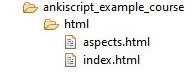
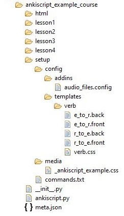

Top-level
Help
Help text may be included in the addon.
Help text should be put into its own directory, which can have any name.

Setup and lessons
Setup and lessons use the same file layout, with:
- a
mediadirectory containing all files to be copied to the Anki media collection - a
configdirectory containing all addon and card template configuration data
Addon configuration should be defined in a file within the
config directory. The file should have
a .config file extension, with the filename being the name of the addon being configured, converted to lowercase
and with spaces replaced by an underscore.
Card template configuration should be defined in files within the
templates directory. The files
should be in a alias directory under the setup / lesson directory - see
for details on how the file names are derived.
The Anki Script example course setup illustrates this layout:
